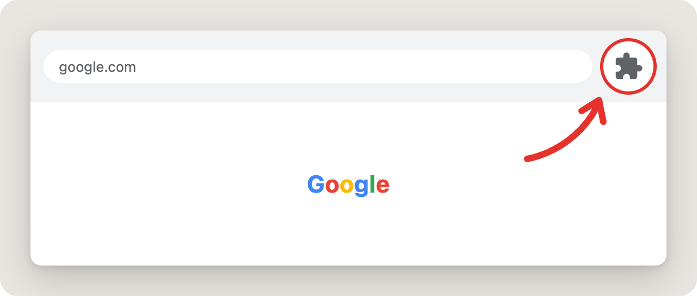
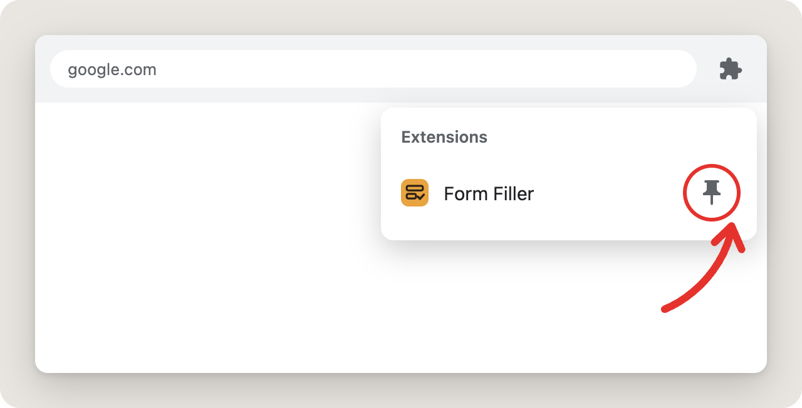
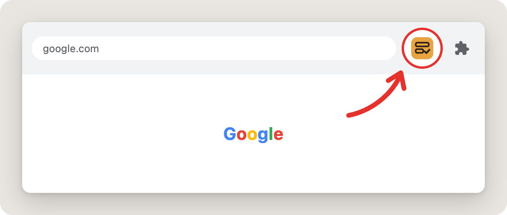

✓ Installed
Form Filler is ready
Pin it to your toolbar so it's always one click away.
-
1Click the puzzle icon in the top-right corner of Chrome

-
2Find Form Filler and click the pin

-
3Click the Form Filler icon to get started

Next: add your details once, then open any form and press Fill.